{kind=link}
A real kernel.
A space of its own.
Each sprite runs in a Firecracker microVM, with hardware isolation and a persistent ext4 disk.
Real Linux environments that remember where you left off.
Run them on your own hardware. Let them sleep between requests.
Each sprite runs in a Firecracker microVM, with hardware isolation and a persistent ext4 disk.
Idle sprites suspend with memory intact. The next request wakes them. Even a cold sprite keeps its files.
Use the official sprite CLI and Go, Python, or JavaScript SDKs. Point them at your host and go.
From the big picture to a shell inside a VM.
It all ships with the daemon.
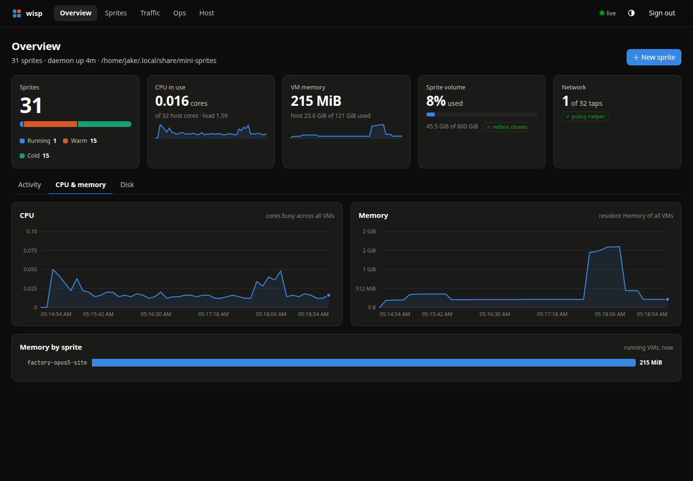
Follow CPU and memory across the host, then see what each running sprite uses.
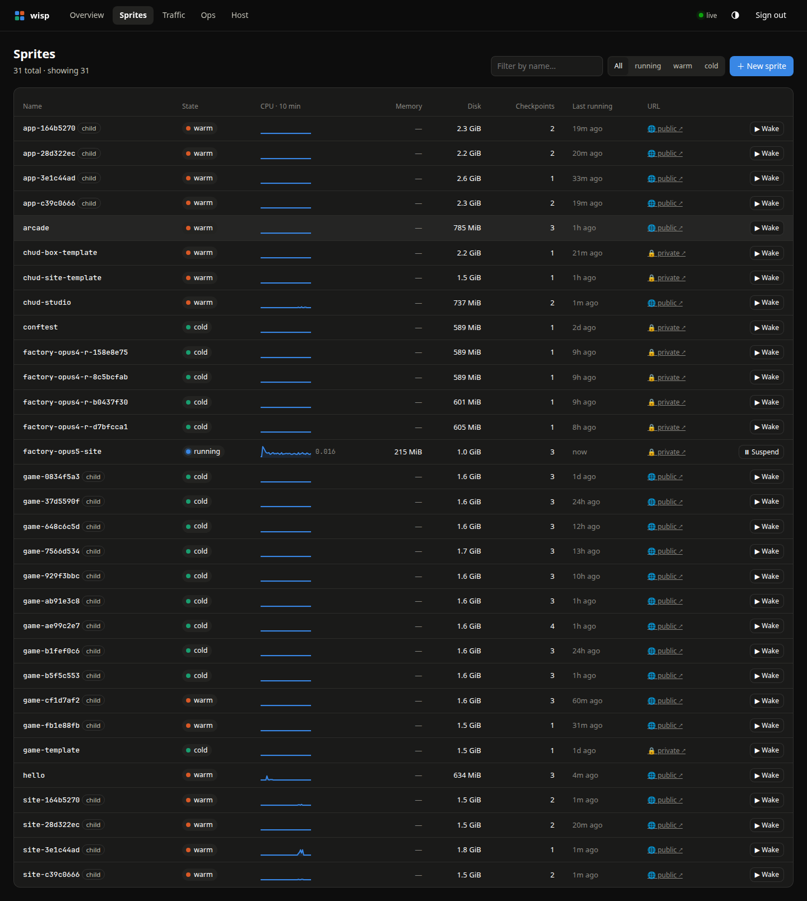
Scan state, CPU sparklines, memory, disk, and checkpoints in one table.
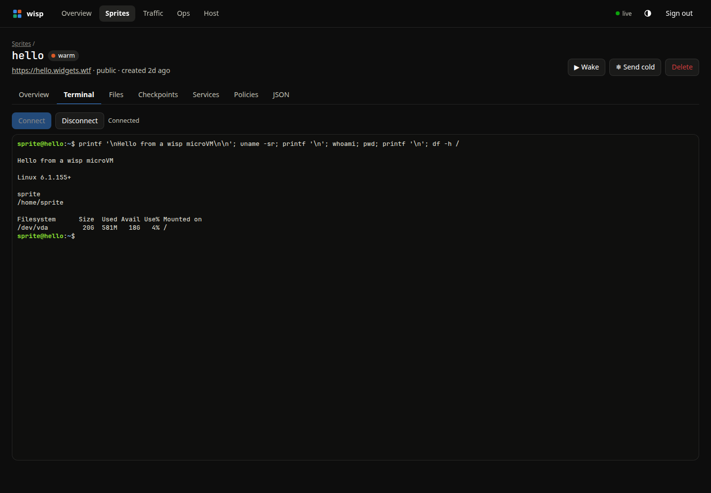
Open a terminal inside a microVM. An attached session keeps the sprite awake.
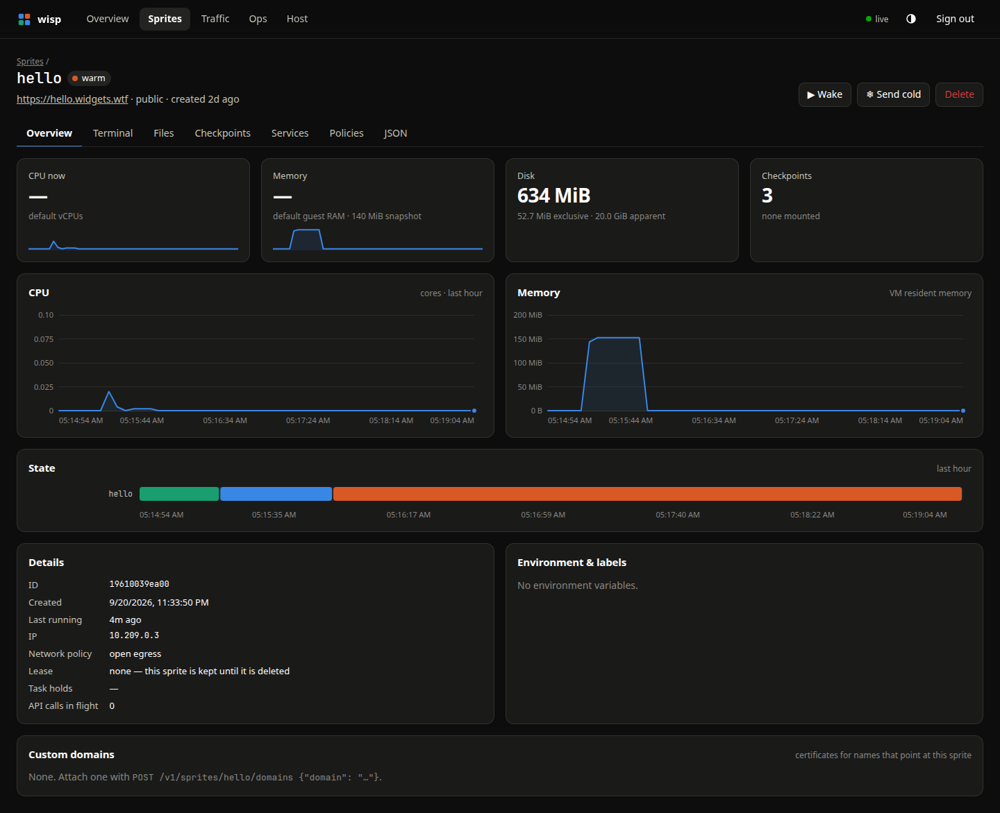
Inspect one sprite’s resources, state, URL, and recent activity.
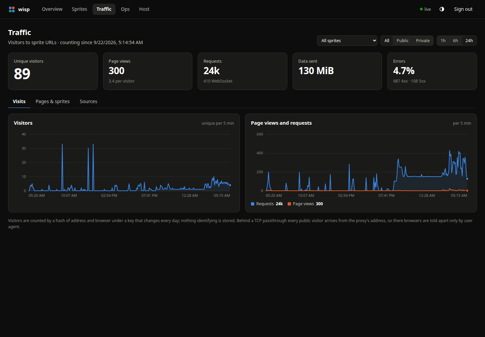
Track visitors, page views, requests, and errors for your sprite URLs.
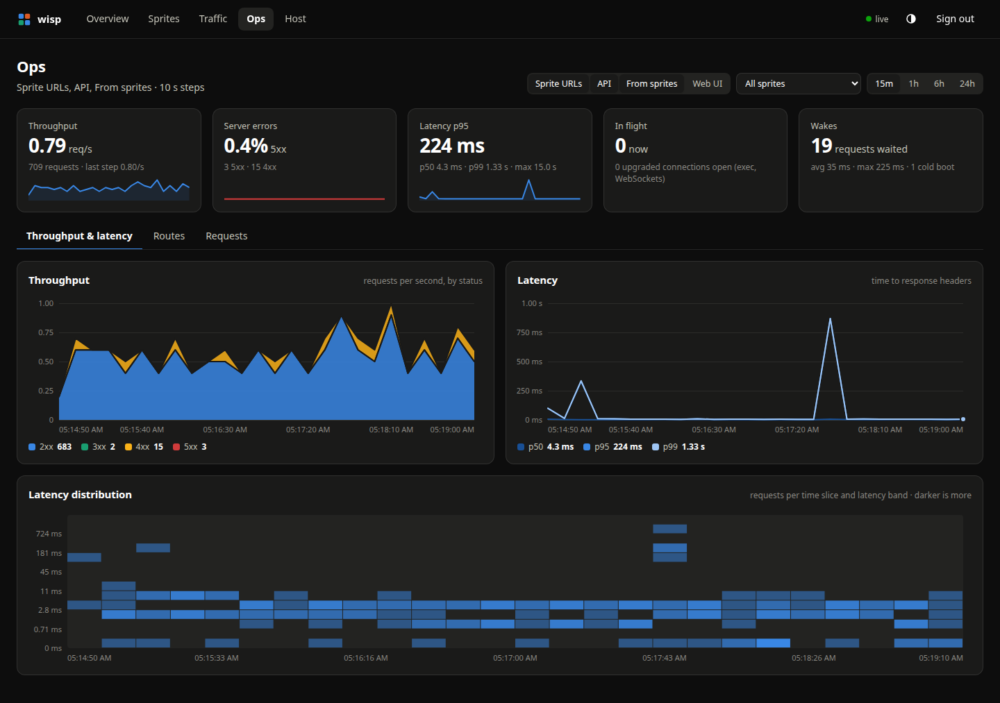
Watch throughput, latency percentiles, and a latency heatmap over time.
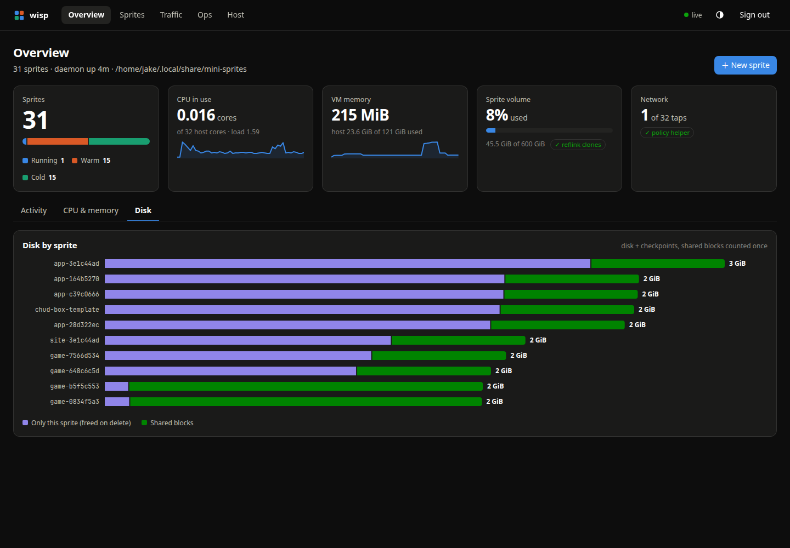
See disk usage by sprite, including exclusive data and shared clone extents.
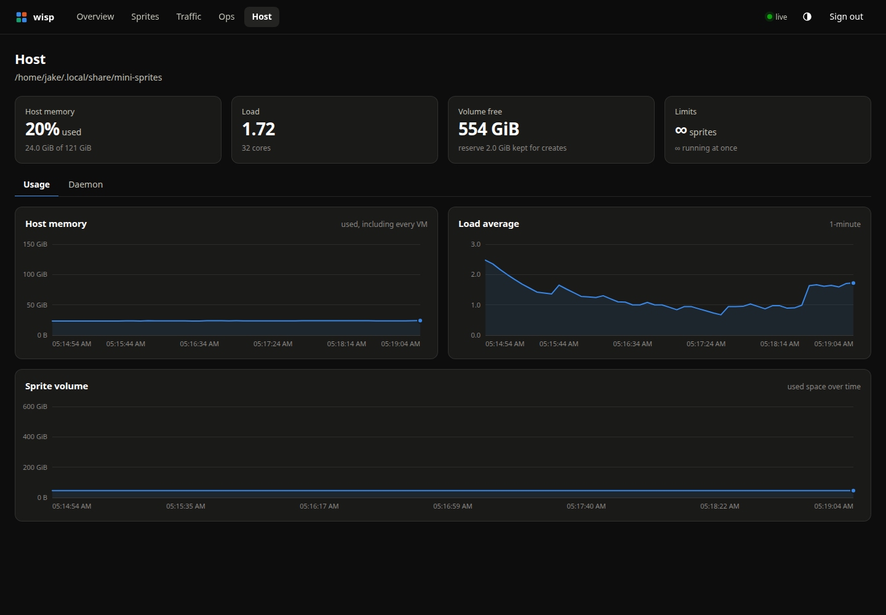
Watch memory, load, and volume usage on the machine behind your sprites.
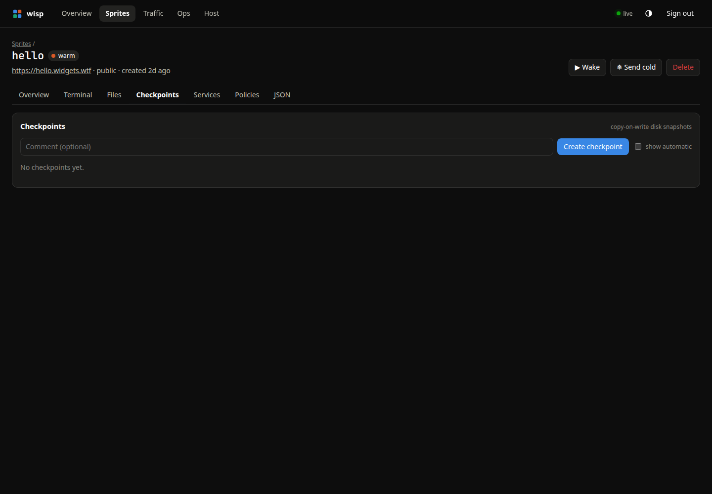
Create, restore, and clone disk checkpoints from a sprite’s own page.
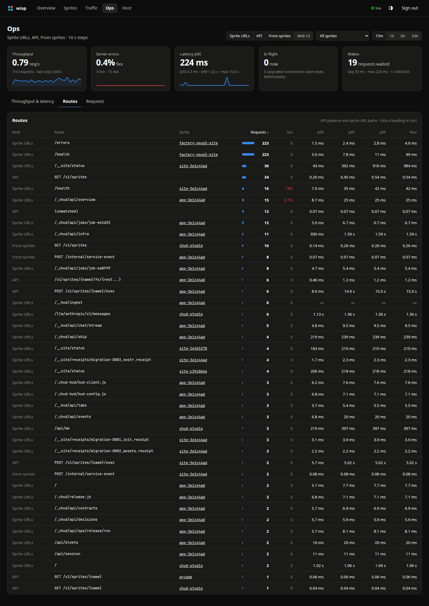
Compare request counts, errors, and latency by API route or sprite URL path.
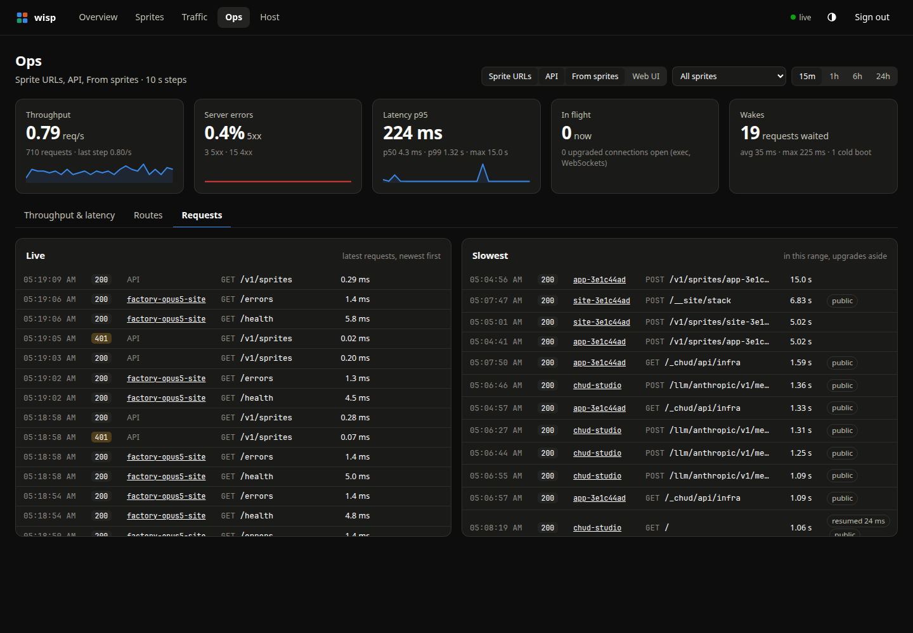
Inspect the live request tail and the slowest requests in the selected window.
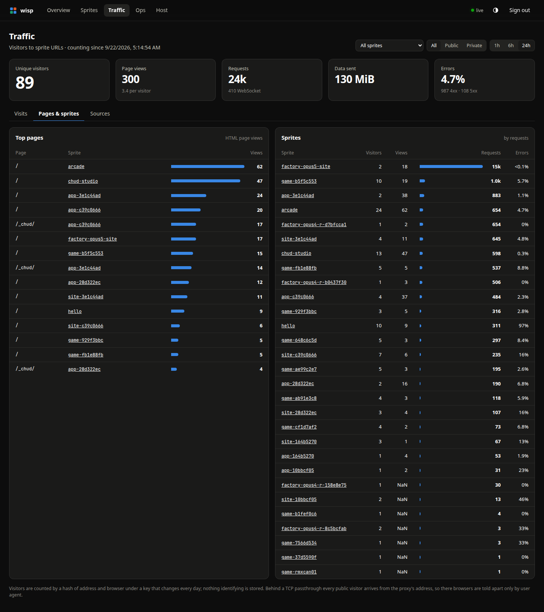
Break down traffic by page and by sprite, with visitors, views, and errors.
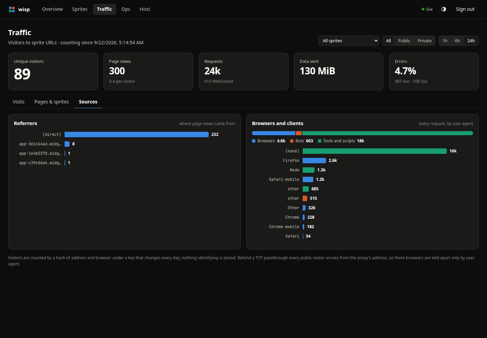
Explore referrers and the mix of browsers, bots, and tools reaching your apps.
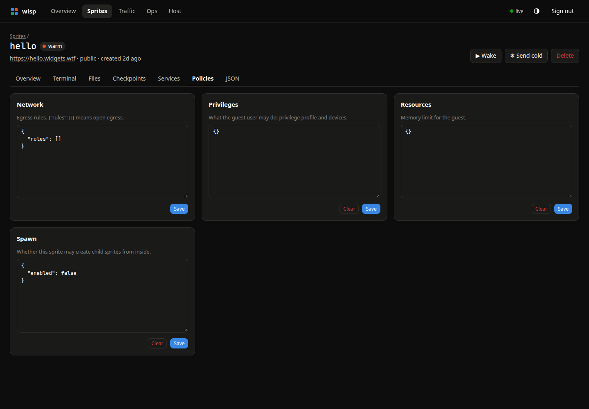
Inspect and edit network, privilege, resource, and spawn policies as JSON.
A Firecracker process runs your Linux environment. Requests and active sessions keep it awake.
After 30 seconds idle →Memory is saved to disk. Processes freeze, then resume when the next request arrives.
After the warm TTL (default: 1 hour) →Only the disk remains. The next request boots a fresh VM with your filesystem intact.
A request wakes it up ↗You’ll need Linux, read/write access to /dev/kvm, Go, and rootless Podman.
The daemon runs as your user. Guest networking is an optional host setup step.
Read the host setup guide ↗git clone https://github.com/jhgaylor/wisp
cd wisp
make deps image
make install-serviceexport SPRITES_API_URL=http://127.0.0.1:7788
export SPRITE_TOKEN=$(cat ~/.local/share/wisp/token)
sprite create dev
sprite exec -s dev -- uname -aAlready have the official sprite CLI? You’re ready.
Or connect with the Python, JavaScript, or Go SDK.
http://127.0.0.1:7788Paste the token from ~/.local/share/wisp/token.
The details, tradeoffs, and operating instructions.
Services, reboots, resource limits, and disk pressure.
02Sprite URLs, custom domains, and automatic certificates.
03Create a sprite from your preferred image and userland.
04Incremental backups to S3-compatible storage and host recovery.
05Network policy, process confinement, and security limitations.
06Deliberate differences from the hosted Sprites product.
{kind=link}
{kind=link}
{kind=link}
{kind=link}
{kind=link}
{kind=link}
{kind=link}
{kind=link}
{kind=link}
{kind=link}
{kind=link}
{kind=link}
{kind=link}
{kind=link}